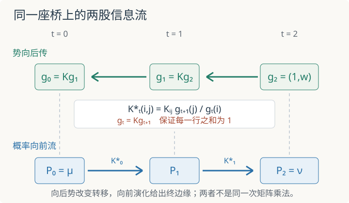

本页目录
基础衔接 10 · Markov 路径桥：八条路径怎样完成一次熵投影
先修：条件期望与鞅、计算最优传输。本讲把Schrödinger 桥缩到两个状态、三个时刻和八条路径，在一页账本中验证向后势、Doob 转移、三时刻边缘与路径相对熵。我们先选择终端势并由它导出终边缘，再证明所得路径律是这对边缘的熵极小桥；这不是求解任意指定双边缘的 Sinkhorn 算法。
只改终点偏好，怎样让每一步都提前作出反应？
1. 一枚会停留或翻面的硬币
状态空间只有 \(\{0,1\}\)，时刻为 \(t=0,1,2\)。参考过程从
出发，每一步使用同一个转移矩阵
\(r\) 是一次翻转状态的概率。因为所有矩阵元都正，八条路径 \((i,j,k)\in\{0,1\}^3\) 在参考律下都有正概率
现在希望新过程从指定分布
出发，并在终点更偏爱状态 1。先选正终端势
\(w\) 不是预先指定的终点概率；它只是给落在状态 1 的路径一个相对权重。把 \(g_2\) 整体乘同一正数不会改变最后的路径律，所以固定第一个分量为 1 只是消除尺度自由度。
2. 终端信息先向后传播
定义
逐项写开：
这里 \(g_t(i)\) 可以读作：参考链目前位于 \(i\) 时，未来终端权重的条件平均。它满足向后递推，而概率分布稍后沿相反方向向前演化。
为了把新初始边缘钉成 \(\mu\)，定义
八条路径的新概率为
对固定 \(i\) 求和，\(\sum_{j,k}K_{ij}K_{jk}g_2(k)=(K^2g_2)(i)=g_0(i)\)，所以
这同时证明总概率为 1 和 \(P_0=\mu\)，不是额外归一化后的巧合。

3. Doob 转移为什么每行和为一
对 \(t=0,1\) 定义扭转后的转移
因为 \(g_t=Kg_{t+1}\)，所以
所有项也非负，因此 \(K_t^*\) 确实是转移矩阵。把两步相乘时，中间势望远镜消去：
所以 \(P\) 是一条从 \(\mu\) 出发的 Markov 链，而不是只在路径表上拼出的联合分布。
终点边缘由演化计算出来：
这一步的逻辑顺序很重要：本讲给定 \((r,u,w)\)，输出 \(\nu\)。若问题反过来给定任意 \(\mu,\nu\)，必须求出同时满足两端约束的势，通常需要 Schrödinger 系统或 Sinkhorn 迭代。
4. 默认八路径账本
取实验默认值
则
两步扭转转移分别是
因此八条路径全部可以逐格复算：
| 路径 \((i,j,k)\) | 精确概率 | 小数 |
|---|---|---|
| 000 | \(9/44\) | 0.204545 |
| 001 | \(3/22\) | 0.136364 |
| 010 | \(1/44\) | 0.022727 |
| 011 | \(3/22\) | 0.136364 |
| 100 | \(3/52\) | 0.057692 |
| 101 | \(1/26\) | 0.038462 |
| 110 | \(3/52\) | 0.057692 |
| 111 | \(9/26\) | 0.346154 |
按时刻求边缘得到
也可以从前向演化核对终点：
完整静态后备：先预测增大 \(w\) 后，终点状态 1 的概率是否会直接等于 \(w/(1+w)\)。实验允许 \(r\) 从 0.05 到 0.45、\(w\) 从 0.25 到 4、\(u\) 从 0.1 到 0.9；默认值如上。答案一般不是 \(w/(1+w)\)，因为初始边缘和两步可达性也进入 \(g_0\) 与 \(\nu\)。
默认八条路径概率见上表；三时刻状态 1 概率依次为
| 时刻 | \(P_t(1)\) |
|---|---|
| 0 | \(1/2=0.500000\) |
| 1 | \(161/286\approx0.562937\) |
| 2 | \(94/143\approx0.657343\) |
默认路径相对熵为
5. 固定端点以后，中间桥为什么原封不动
新过程的端点联合分布是
给定起点 \(i\) 与终点 \(k\) 后，中间状态的条件概率为
\(f_i,R_0(i),g_2(k)\) 全部约掉了。右边恰好也是参考链的 \(R(j\mid i,k)\)。桥改变了不同端点对的权重，却没有改变同一端点对内部怎样经过中间状态。
同一事实也让完整路径 KL 缩成端点 KL。因为
其中 \(R_{02}(i,k)=R_0(i)(K^2)_{ik}\)，所以
中间状态没有贡献额外 KL，原因不是它“不重要”，而是条件桥被精确保留。
6. 为什么它真是这对边缘的熵极小桥
现在固定本讲已经导出的两端边缘 \(\mu,\nu\)。任取另一条具有相同边缘的路径律 \(Q\)，相对熵链式分解给
第二项非负，所以给定端点联合分布后，保留参考条件桥最省熵。端点层还需证明 \(\pi\) 最优。利用
以及 \(Q_{02}\) 与 \(\pi\) 具有相同的行、列边缘，得到
合起来，
在这里所有参考概率都正，等号要求端点表就是 \(\pi\)，且每个端点条件桥都等于参考条件桥，因此 \(P\) 是唯一极小解。这一证明针对由 \((u,w)\) 生成的 \(\mu,\nu\)；它没有跳过“任意给定 \(\nu\) 时怎样求势”的另一半问题。
7. 两道迁移题
题一。 保持任意 \(0<r<1\) 和 \(0<u<1\)，但令 \(w=1\)。求 \(g_2,g_1,g_0,f\) 与两步转移，并说明为什么新过程仍不一定等于参考过程。
分开检查转移与初始分布
\(g_2=g_1=g_0=(1,1)\)，所以 \(K_0^*=K_1^*=K\)。但
因此新过程的初始边缘是 \(\mu\)，未必是参考的 \((1/2,1/2)\)。终边缘为 \(\nu=\mu K^2\)。终端势不倾斜只恢复了参考转移，没有抹掉已经指定的初始边缘变化。
题二。 实验故意不允许 \(r=0\)。若取边界值 \(r=0\)，参考链只能走 000 与 111。此时本讲构造导出的 \(\nu\) 是什么？能否另外指定 \(\mu=(1/2,1/2)\)、\(\nu=(1/4,3/4)\) 并得到有限 KL 的桥？
先检查参考支持
\(r=0\) 时 \(K=I\)，故 \(g_0=g_1=g_2\)，路径权重中的终端势与分母相消，得到 \(P(000)=u\)、\(P(111)=1-u\)，所以 \(\nu=\mu\)，与 \(w\) 无关。
若强行要求不同的终边缘，就必须给换状态路径正概率，但参考律在这些路径上为零。候选律不再满足 \(P\ll R\)，于是 \(H(P\mid R)=+\infty\)。这不是数值迭代太少，而是支持不可达。实验域取 \(r\ge0.05\) 正是为了把可计算的全支持模型与这个边界反例分开。
速查与资料
| 机制 | 可验算等式 | 它保证什么 |
|---|---|---|
| 势向后传 | \(g_t=Kg_{t+1}\) | \(K_t^*\) 每行和为 1 |
| 概率向前流 | \(P(i,j,k)=\mu_iK_0^*(i,j)K_1^*(j,k)\) | \(P_0=\mu\)，演化得到 \(P_2=\nu\) |
| 固定端点条件桥 | \(P(j\mid i,k)=K_{ij}K_{jk}/(K^2)_{ik}\) | 中间路径沿用参考桥 |
| KL 望远镜 | \(H(P\mid R)=H(\pi\mid R_{02})\) | 没有额外条件路径代价 |
| 熵投影 | \(H(Q\mid R)\ge H(P\mid R)\) | 对导出的 \(\mu,\nu\)，\(P\) 是极小桥 |
路径空间 Schrödinger 问题、熵的条件分解与 \((f,g)\) 变换可参见 Léonard 的 A survey of the Schrödinger problem and some of its connections with optimal transport；离散 Markov 近似和迭代比例拟合的现代计算路线可参见 Bernton、Heng、Doucet、Jacob 的 Schrödinger Bridge Samplers。本讲的八路径结论已在正文中逐项推导；资料核查：2026-09-08。